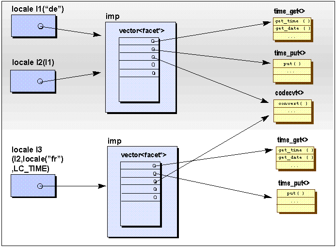

A C++ locale object is a container of facet objects which encapsulate internationalization services, and represent culture and language dependencies. Here are some functions of class locale which allow you to create locales:
class locale {
public:
// construct/copy/destroy:
explicit locale(const char* std_name); //1
// global locale objects:
static const locale& classic(); //2
};
| //1 | You can create a locale object from a C locale's external representation. The constructor std::locale::locale(const char* std_name) takes the name of a C locale. This locale name is like the one you would use for a call to the C library function setlocale(). |
| //2 | You can also use a predefined locale object, returned by std::locale::classic(), which represents the US English ASCII environment. |
For a comprehensive description of the constructors described above, see the Apache C++ Standard Library Reference Guide.
It's important to understand that locales are immutable objects: once a locale object is created, it cannot be modified. This makes locales reliable and easy to use. As a programmer, you know that whenever you use pointers or references to elements held in a container, you have to worry about the validity of the pointers and references. If the container changes, pointers and references to its elements might not be valid any longer.
A locale object is a container, too. However, it is an immutable container; that is, it does not change. Therefore, you can take references to a locale's facet objects and pass the references around without worrying about their validity, as long as the locale object or any copy of it remains in existence. The locale object is never modified; no facets can be silently replaced.
At some time, you will most likely need locale objects other than the US classic locale or a snapshot of the global locale. Since locales are immutable objects, however, you cannot take one of these and replace its facet objects. You have to say at construction time how they shall be built.
Here are some constructors of class locale which allow you to build a locale object by composition; in other words, you construct it by copying an existing locale object, and replacing one or several facet objects.
class locale {
public:
locale(const locale& other, const char* std_name, category);
template <class Facet> locale(const locale& other, Facet* f);
locale(const locale& other, const locale& one, category);
};
The following example shows how you can construct a locale object as a copy of the classic locale object, and take the numeric facet objects from a German locale object:
std::locale loc(std::locale::classic(),
std::locale("De_DE"), LC_NUMERIC);
For a comprehensive description of the constructors described above, see the Apache C++ Standard Library Reference Guide.
Copying a locale object is a cheap operation. You should have no hesitation about passing locale objects around by value. You may copy locale objects for composing new locale objects; you may pass copies of locale objects as arguments to functions, etc.
Locales are implemented using reference counting and the handle-body idiom: When a locale object is copied, only its handle is duplicated, a fast and inexpensive action. Similarly, constructing a locale object with the default constructor is cheap -- this is equivalent to copying the global locale object. All other locale constructors that take a second locale as an argument are moderately more expensive, because they require cloning the body of the locale object. However, the facets are not all copied. The byname constructor is the most expensive, because it requires creating the locale from an external locale representation.
Figure 10 describes an overview of the locale architecture. It is a handle to a body that maintains a vector of pointers of facets. The facets are reference-counted, too.
